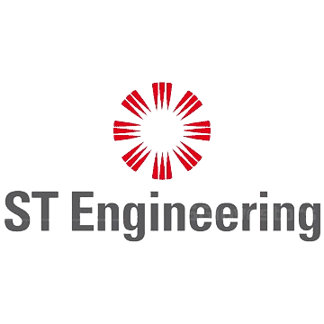

May 2024 – Present
ST Engineering, Software Engineer (Singapore)

- Developed and maintained 11 XR applications in Swift and VisionOS for Apple Vision Pro, such as user authentication, interactive scenes, and remote monitoring.
- Unified various application capabilities into a cohesive solution, improving overall functionality and user experience.
Aug 2022 – Present
National University of Singapore, Teaching Assistant (Singapore)

- Designed and delivered class materials, tutorials, and consultation sessions for 27 students in the Data Structures and Algorithms module. (Aug 2022 – Dec 2022)
- Mentored 12 student teams on self-directed software development projects, emphasizing Unity game development and Telegram bot creation, with 10 teams achieving Apollo 11 (Advanced) level and 2 teams attaining Gemini (Intermediate) level. (May 2023 – Aug 2023)
- Guided 13 student teams in the subsequent iteration of self-directed software development projects, focusing on Unity game development, Telegram bot creation, and web application development. (May 2023 – Present)
Dec 2022 – Dec 2023
InTune Auto, Software Engineer (New York)

- Engineered and deployed 9 major projects, including digital authorization, automated reminders, appointment scheduling, Twilio SMS/Gmail integration, EC2 image attachments, and OpenAI utilization.
- Utilized comprehensive testing strategies with Cypress for frontend and JUnit for backend.
- Leveraged technologies like Heroku, Netlify, DataDog, AWS (ECR, ECS), and Docker, and coded in TypeScript, React, Jersey, jOOQ, and PostgreSQL.
Sep 2022 – Jan 2023
Solutions16, Software Engineer (Singapore)

- Devised an end-to-end monitoring system using MosquittoMQTT, DigitalOcean, LilyGO SIM7600, and ESP32, integrated with Blynk and MongoDB to collect over 200,000 data points.
- Implemented just-in-time alerts for WhatsApp and Telegram via Meta for Developers and BotFather, successfully averting 2 instances of severe property damage from pump room leaks.
- Automated email notifications using the Blynk IoT platform, eliminating manual 8-hour updates.